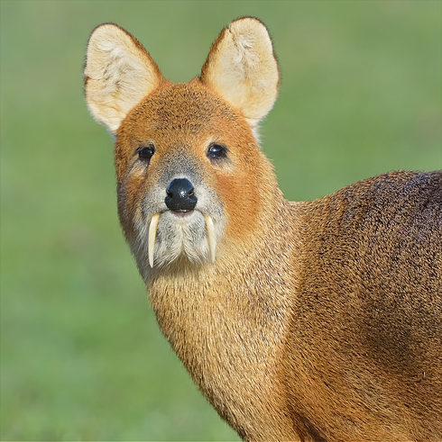
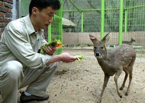

고라니

고라니의 쓰임
고라니는 사슴과 동물 중엔 크기도 작을 뿐만 아니라 가죽도 약하여 털이 잘 빠져 피혁용으로는 안 쓴다.
소목류 포유동물이 그렇듯 고기 맛은 나름대로 괜찮다고는 하지만 지방이 적어 소, 돼지처럼 구워먹을시 굉장히 퍽퍽하고 이는 돼지고기 살코기만 뗴어 2번 구운듯한 느낌이라고 한다. 육회로 먹으면 제법 괜찮은 맛이 난다고 하지만 야생동물이기에 기생충에 감염되어 크게 탈이 날 수 있기 때문에 냉동시켜서 기생충을 죽여 먹어야하지만 그럴시 육질도 나빠지므로 맛이 떨어진다.
양념을 한 고라니 불고기, 장조림은 소고기 불고기, 장조림과 차이를 느끼기 힘들다곤 하지만 누린내가 가장 큰 걸림돌이며 특히 혈액과 내장이 냄새가 심하다고 한다. 따라서 도축시 동맥을 찌르거나 내장을 가르면 냄새가 코를 찌르고 피가 많이 묻은 부위는 먹기 힘든 수준이라고 한다. 누린내를 피하려면 포획 직후 전문가가 내장을 제거하는 것이 급선무다.
고라니의 가축화 같은 경우 젖먹이 때부터 돌봐주고 키우면 강아지처럼 애교도 부리고 의외로 사람을 잘 따르곤 한다. 하지만 가축화는 쉽지 않다. 고라니는 어디서든 먹을게 널린 초식동물이라 어느정도 성장하고 나면 주인, 심지어 친부모에게도 의존할 필요가 없기에 나이를 먹을수록 주인 또는 부모의 필요성을 느끼지 못하여 떠나려고 한다. 게다가 약한 초식동물들은 안전에 너무 예민하여 인간의 손길도 공격으로 받아들이고 과민반응하여 도망치려 든다. 보통 초식동물은 주변에 자신과 같은 동물이 아닌 생명체가 있으면 잡아먹힐 수 있다는 생각을 하여 불안해 하기에 탁 트인, 퇴로가 뚫린 공간을 선호한다. 하지만 한국인이 사육하는 집은 이런 환경을 제공하기가 사실상 불가능하고 고라니가 밖으로 나가지 못하게 담을 높게 쌓고 집을 지어주면 고라니는 공포를 느끼게 되므로 어떻게든 이런 구속장비를 때려부수고 우리를 넘으며 불안하다며 울부짖는다. 이런 울음소리에 감당하지 못하고 방생하는게 대부분이다.
종합하면 가죽도 못 쓸 물건이고 고기 또한 냄새 제거가 힘들어 도무지 산업적으로 이용 가치가 없는 야생돌물이다. 심지어 워낙 흔하다 보니 동물원에 고라니를 전시한 동물원은 국립생태원이 유일하다.